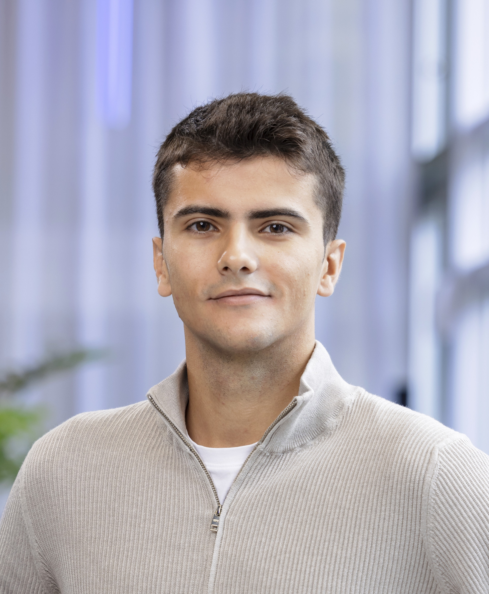

Gerard Castro López
Courant Institute, New York University

Papers
- Self-similar solutions for capillary water waves
Preprint.
Selected honors and awards
- 2026Willi Studer Prize — ETH ZurichHighest graduating grade, Mathematics MSc (6.0/6).
- 2025Arquímedes Prize (First Global Prize) — Spanish Ministry of ScienceBest bachelor’s or master’s thesis across all disciplines in Spain. Related paper
- 2025Emmy Noether Prize — Catalan Society of MathematicsBest mathematics bachelor’s thesis in Catalonia. Related paper
- 2025–2027“la Caixa” FellowshipPhD funding.
- 2024Excellence Scholarship and Opportunity Programme (ESOP) — ETH ZurichFull scholarship for master’s studies.
Invited talks
- NYU Courant — Student Analysis Seminar
- BIRS-CMO Workshop — Stable and unstable dynamics in PDEs and Hamiltonian systems
- AMS New England Graduate Student Conference
- Equadiff Conference 2024 — Karlstad, Sweden
- Brown University — PDE Seminar